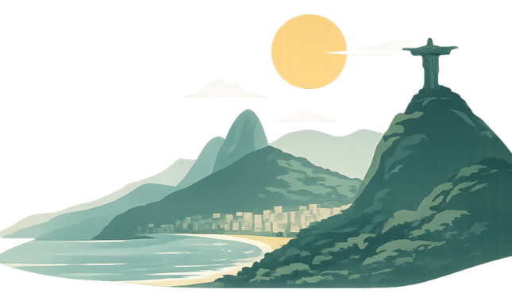

O que é a Bossa Nova?
A bossa nova é um movimento musical brasileiro que surgiu no final dos anos 1950, no Rio de Janeiro.
Ela combina elementos do samba com harmonias mais sofisticadas do jazz, criando um som suave, intimista e elegante.
Marcada por violão suave, voz baixa e ritmo leve, a bossa nova revolucionou a música brasileira.
Grandes nomes como João Gilberto Tom Jobim e Vinicius de Moraes foram fundamentais para seu desenvolvimento.
Canções como Chega de Saudade e Garota de Ipanema tornaram-se famosas mundialmente, ajudando a levar a música brasileira para o cenário internacional.
Em resumo, a bossa nova é um estilo que representa delicadeza, inovação e o espírito carioca, sendo até hoje uma das maiores contribuições do Brasil para a música mundial.
